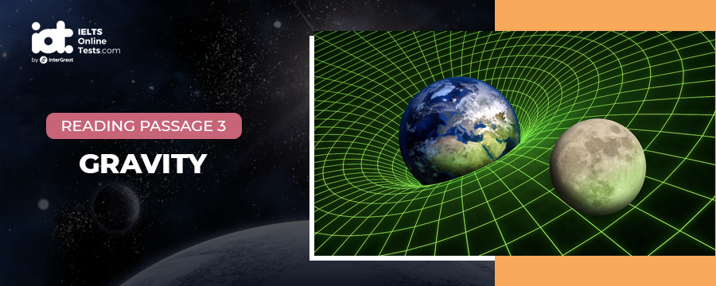

Part 1
READING PASSAGE 1
You should spend about 20 minutes on Questions 1-12 which are based on Reading Passage 1 below.

THE ‘BEAUTIFUL’ GAME
A
Every nation has a sport to represent it. In the U.S., there is baseball; in New Zealand, rugby. In the UK, football is the national sporting obsession. While many UK teams have gained international recognition, Manchester United is among those most well-known on a global scale. Yet while most people, regardless of the sporting preference or nationality, have some passing knowledge of Manchester United, fewer can claim knowledge of the origins of the team. Manchester United came into being in 1902 as a result of bankruptcy of the team formerly known as Newton Heath. Newton Heath began life as Newton Heath LYR (Lancashire and Yorkshire Railway) club and as the name suggests, the original team was comprised of railway workers. Despite turning professional in 1885 and becoming the founding member of the Football Lions in 1889, Newton Heath – nicknamed the ‘Heathens’ – was constantly troubled by financial difficulties.
B
Salvation came in the form of local brewer, John Henry Davis, who agreed to invest in the team on condition of being given some interest in running it. After consideration of the alternatives titles of Manchester Central and Manchester Celtic, the club was christened Manchester United in April 1902. United’s first manager, though officially titled Secretary, was Ernest Mangnall, who was appointed in September 1903, but it was not until the season of 1905/1906, that United experienced its first taste of success. His side reached the quarterfinals of the F.A, Cup and were runners up in the second division.
C
In 1907, United claimed the championship for the first time and won the first ever Charity Shield trophy in 1908. In the following year, United claimed the F.A. Cup trophy after beating Bristol City. Manchester United moved to its new stadium, Old Trafford, in early 1910. The move to the stadium, owned by the John Henry Davis brewery (a Manchester beer-making company), was proven to be fortunate as on the 17th of February, 1910, two days before the team’s first scheduled game, the previous stadium Banks Street was destroyed in a fire. The new stadium had a capacity for a crowd of 80,000 spectators and despite losing to their first visiting team Liverpool, Manchester United were once again league champions at the end of the first full season playing from Old Trafford.
D
The following years were to be less of a success. From 1912 to the onset of the First World War, no significant victories were achieved. During the war the football league was suspended and only regional competitions took place. 1919 saw the return of Manchester United to league football with only two of the original members in the team.
E
Although Britain has a long and proud history of football adoration, contemporary football supporters from the UK have gained a negative reputation for outbursts of violence against rival supporters, earning the label ‘football hooligan’. The football hooliganism phenomenon has attracted the attention of a number of researchers and psychologists who have offered theories relating to its causes. It is generally agreed that a combination of factors may initiate this type of anti-social behaviour and that it is unrealistic to contend that all such behaviour stems from a particular psychological make-up or belongs to a specific age or class. Experts do however believe that rampaging hooligan behaviour can instil a sense of belonging and ‘community’ in participants who feel that they can strongly identify with their group, regardless of the fact that the group’s behaviour is negative.
F
Analysts also argue that the motivations for outbursts of violence experienced in an international setting are even more complex. Whilst alcohol and xenophobia no doubt play a part they say, some psychologists hold that policing tactics, to a large degree, dictate the level of disturbance likely to occur. Evidence supports the view that confrontational policing is much more likely to escalate than calm any incidences of trouble. The media’s actions have also been criticised due to the belief by some that messages given in newspaper reporting may also exacerbate the existing problem of football hooliganism.
G
Critics say that certain headlines used by tabloid newspapers may glorify acts of violence and at least, the prolific news reports which are published in the UK about this issue cause perpetrators to receive undue attention and acknowledgement for their actions. Whilst few disagree that football hooliganism is a significant social problem, many researchers hold that sensationalist media reporting may also be creating undue panic since the problem is often presented as much more widespread than is the reality. Extreme cases of hooliganism from British fans has reduced significantly over recent years, and while it may take some considerable time for the negative reputation they have earned to subside, it is also true that a large proportion of supporters have no involvement in violence and simply share a love of the game.
Part 2
READING PASSAGE 2
You should spend about 20 minutes on Questions 13-25 which are based on Reading Passage 2 below.

CAN WE BELIEVE OUR OWN EYES?
A. An optical illusion refers to a visually perceived image that is deceptive or misleading in that information transmitted from the eye to the brain is processed in a way that the related assumption or deduction does not represent the true physical reality. Our perceptions of what we think we see can be influenced by a number of external factors; ‘illusions’ can be classified into two main categories these being ‘physiological illusions’ and ‘cognitive’ illusions, the latter category can then be divided again into four sub-types.
B. Physiological illusions occur as a result of excessive stimulation of the eyes and brain which leads to a temporary state of confusion and mixed messages. For example, after exposure to extremely vivid lights, the eyes may need time to adapt and immediately after the stimulus, we may see things that would not be the norm. In the same way a contingent perceptual after-effect may be experienced after staring at a particular colour and the receptors in the brain may process subsequent colours inaccurately until overload has passed.
C. Cognitive illusions, on the other hand, are said to arise not as a result of neurone activity as with the aforementioned category, but due to assumptions we may consciously make based on our knowledge and experience of the world. The four categories of cognitive illusion are ‘ambiguous’ illusions, ‘distorting’ illusions ‘paradox’ illusions and ‘fictional’ illusions. Inclusion of ‘fictional’ illusions into the cognitive group is somewhat misleading; however, as this type of illusion is unique in that it is only seen by an individual in a given situation and exists in no tangible form. A fictional illusion is in reality a hallucination which arises as a result of drug use or a brain condition such as schizophrenia.
D. Ambiguous illusions are pictures or objects which are structured in such a way that alternative perceptions of their structure are possible. Different individuals may instantly perceive the object or picture in a different way than another and, in fact, the same individual is often able to see and interpret the image or object in more than one form. A classic example of an ambiguous illusion is the Necker cube. This cube is a standard line drawing which our visual senses generally interpret as a three dimensional box. Wien the lines of the box cross, the picture intentionally does not define which is in front and which is behind. However, when individuals view the box, it is the automatic response of the mind to interpret what is seen. Generally our thought process patterns work in the way that we view objects from above; for this reason, when most people look at the Necker Cube they will interpret the lower left face as being the front of the box, the base of the front face being parallel to the floor as their thought processes convert the image to three dimensions. However, it is also possible to interpret the image differently in that the front of the box could also be seen to be in a different position.
E. The Necker Cube made contributions to researchers’ understanding of the human visual system, providing evidence that the brain is a neural network with two distinct and interchangeable states. It has also been used in epistemology – the study of knowledge – as evidence to disprove the theory upheld by ‘direct realism’ that the way the human mind perceives the world is the way the world actually is. To illustrate, with the՜ Necker cube we are generally able to see one or both versions of a three dimensional cube, when in fact only a two dimensional drawing comprised of 12 lines exists.
F. Distorting illusions affect an individual’s ability to judge size, length, or curvature; the Muller-Lyer illusion which consists of three lines with arrow-like endings is a prime example. In this illusion the middle arrow has both arrow ends pointing out, while the line above it has arrow’ ends pointing in and the third and final line possesses one inward pointing and one outward pointing arrow’ end. ¿Most respondents from certain backgrounds generally respond that the middle arrow is the longest (though all are in fact the same). However, cultural backgrounds affect perceptions related to this illusion; international research having shown that non-Western subjects, particularly those generally not exposed to rectangular shaped buildings and door frames in their day to day life, are less likely to misinterpret the true length of the three drawings.
G. Paradox illusions encourage the mind to believe that we are seeing something we know to be impossible. The Penrose Stairs and the Penrose Triangle, developed by Lionel Penrose are examples of models created to illustrate this phenomenon. Many naturally occurring optical illusions also exist. Throughout the world there a number of locations where objects can be perceived to roll uphill; our cognitive and pre-learned knowledge inform us that this is impossible; however information received by the visual senses of observers creates conflict. These areas are often known as ‘gravity hills or ‘magnetic’ hills and are often popular with tourists; the mystical properties of the area often promoted vigorously to add mystique or claimed to arise as a result of the special properties and magnetic influence of the area’s land.
H. The scientific explanation for such phenomenon is that such areas are set on slightly sloping ground without a visible horizon against which to establish perspective. In addition, surrounding points of reference we would generally expect to be perpendicular, such as trees, are in fact on a slope. The interpretation of what observers believe they are experiencing is therefore confused, downward slopes may be perceived to be horizontal or tilting upwards and cars with hand brakes released on such ground appear to roll upwards when in fact they a rolling, as gravity dictates, in a downhill direction. While our innate sense of balance under normal situations helps us determine the inclination of the ground, interference from the visual stimuli as outlined above and lack of reference from points on the horizon can override this ability in such situations, especially if the gradient is gentle.
Part 3
READING PASSAGE 3
You should spend about 20 minutes on Questions 26-40 which are based on Reading Passage 3 below.

GRAVITY
A. Without forces of gravitation, Earth and other planets would be unable to stay in their orbits around the Sun. the Moon would be unable to orbit the Earth, tidal waves would not occur and the rising of hot air or water convection would be impossible. Gravitation is a phenomenon winch allows objects to attract other matter; the physics behind it have been explained in The Theory of Relativity and Newton’s Law of Universal Gravitation; though attempts to explain gravity hail back to ancient times. In 4th Century B.C. the Greek philosopher Aristotle developed the hypothesis that all objects were drawn into their correct position by crystalline spheres and that a physical mass would fall towards the earth in direct proportion to its weight.
B. In the late 16th century Galileo deduced that while gravitation propels all objects to the ground at the same rate, air resistance resulted in heavier objects appearing to fall more quickly; his theories contradicting earlier belief systems put in place by Aristotle and others; so paving the way for formulation of the modern theories of today. Though the two terms are now used interchangeably in layman use, strictly by scientific definition, there are distinct differences between ‘gravitation’ and ‘gravity’. The first relates to the influence exerted by different objects which allow them to attract other objects, whereas ‘gravity’ refers specifically to the force possessed by such objects which facilitates gravitation. Certain scientific theories hold that gravitation may be initiated by a combination of factors and not simply the existence of gravity alone; though doubts have been raised regarding some of these theories.
C. Gravity is directly proportional to mass; a smaller object possessing less gravity. To illustrate, the Moon is a quarter of the Earth’s size and possesses only 1/6 of its gravity. The mass of the Earth itself is not spread out proportionally, being flatter at the poles than the equator as a result of its rotation; gravity and gravitational pull in different locations throughout the world also vary. In the 1960s, as a result of research into the worldwide gravity fields, it was discovered that inexplicably areas around and including the Hudson Bay area of Canada appeared to possess significantly lower levels of gravity than other parts of the globe; the reasons for this dissimilarity have since been extensively investigated resulting in two explanations.
D. The original theory presented attributed this anomaly to activity which occurs 100-200 kilometres below the Earth’s surface within the layer known as the ‘mantle’. The mantle is comprised of hot molten rock known as magma which flows under the earth’s surface causing convection currents. These convection currents can result in the lowering of the continental plates which make up the Earth’s surface, as a result when this occurs, the mass in that area and its gravity is also reduced. Research findings indicated that such activity had occurred in the Hudson Bay region.
E. More recently a second conjecture suggested that, in fact, lower levels of gravity in the area are a result of occurrences during the Ice Age. The Laurentidelcesheet, which covered most of Canada and the northern tip of the USA until it melted 10,000 years ago, is thought to have been 3.2 kms thick in most parts and 3.7 kms thick over two areas of Hudson Bay. The sheer weight of the ice layer weighed down the surface of the earth below, leaving a deep indentation once it had melted, having caused the area around Hudson Bay to become thinner as the earth’s surface was pushed to the edges of the icesheet.
F. Extensive investigation has since been carried out by the Harvard-Smithsonian Center for Astrophysics using data collected by satellites during the Gravity Recovery and Climate Experiment (GRACE) between 2002 and 2006. The satellites are placed 220kms apart and orbit 500kms above Earth. Being extremely sensitive to even minor differences in gravitational pull of the areas of earth they pass over, as the first satellite enters an area with decreased gravity it moves slightly away from the earth as the gravitational pull is reduced and also moves slightly further away from the sister satellite that follows, such activity allowing scientists to create maps of gravitational fields. The GRACE findings also allowed scientists to estimate the appearance of Hudson Bay over 10,000 years ago, prior to the great thaw. The areas possessing the lowest gravity today correlate with the areas covered in the thickest layers of ice at that time.
G. Researchers now believe that both theories regarding reduced gravity levels in the Hudson Bay region are accurate and that the area’s characteristics are a result of both magma activity and the impact of the Laurentidelcesheet. It has been estimated that the former has resulted in 55-75% of gravity reduction and that pressure resulting from the latter accounts for 25-45%.
H. The effects of the Laurentidelcesheet are reversible due to the earth layer’s capability to ‘rebound’ in response to removal of the weight which once restricted it. Return to the original position, however, is an extremely slow process; it is estimated that the area around Hudson Bay will take a further 5,000 years to recover the altitude it once possessed prior to the Laurentidelcesheet. The rebound activity in the area is also measurable through observation of sea levels; unlike the rest of the world, sea levels are not rising in the area as a result of melting icecaps, but are dropping as the land recovers its previous form
I. Research conducted into the Laurentidelcesheet has significant implications on a global scale. The increased knowledge of how that particular area has changed over time and the long-term implications activity in the Ice Age had, pave the way to a better understanding of how current changes elsewhere will manifest themselves over the long term.
Part 1
Questions 1-3
Choose THREE letters A-G.
Write your answers in boxes 1-3 on your answer sheet.
NB Your answers may be given in any order
Which THREE of the following statements are true of Newton Heath?
Questions 4-7
Complete the summary with the list of words A-K below.
Write the correct letter A-K in boxes 4-7 on your answer sheet.
| According to expert opinion, there is little 4. that football hooliganism occurs as a result of a number of issues and does not necessarily correlate with age, psychological profile or 5. . External triggers such as newspaper reports and antagonistic 6. can be attributed to escalation of the problem in certain situations. Some psychologists believe that such behaviour and membership of trouble-making groups can give certain individuals a sense of 7. that may otherwise be missing in their lives. |
| A. | isolation | |
| B. | policing | |
| C. | anger | |
| D. | occupation | |
| E. | belief | |
| F. | proof | |
| G. | class | |
| H. | intelligence | |
| I. | excitement | |
| J. | unity | |
| K. | doubt |
Questions 8-12
Reading Passage 1 has 7 paragraphs A-G.
Which paragraph contains the following information?
Write the correct letter A-G in boxes 8-12 on your answer sheet
NB Each paragraph may be used more than once
8.
9.
10.
11.
12.
Part 2
Questions 13-15
Answer the questions below.
Choose NO MORE THAN THREE WORDS from the passage for each answer.
Write your answers in boxes 13-15 on your answer sheet.
What type of illusion is a result of interference with neurone activity?
13
Which two factors influence the way we process information on a cognitive level?
14
Which theory holds that individuals see only the true reality of a situation?
15
Questions 16-20
According to the information in Reading Passage 2, classify the following as relating to
| A. | Fictional illusions | |
| B. | Paradox illusions | |
| C. | Distorting illusions | |
| D. | Ambiguous illusions |
Write the correct letter A-D in boxes 16-20 on your answer sheet.
16.
17.
18.
19.
20.
Questions 21-25
Choose the correct letter, A, B, C or D.
Write your answers in boxes 21-25 on your answer sheet.


Part 3
Questions 26-31
Reading Passage 3 has nine paragraphs A-I.
Choose the correct heading for paragraphs B, C and E-H from the list of headings below.
Write the correct number i-x in boxes 26-31 on your answer sheet.
| List of Headings | ||
| i. | Return to previous form | |
| ii. | Substantiating a hypothesis | |
| iii. | Historic theories | |
| iv. | The general rule of gravity and an exception | |
| v. | The initial explanation | |
| vi. | How proximity to the poles affected Hudson Bay | |
| vii. | Scientific definition and contemporary views | |
| viii. | Relevance to our future | |
| ix. | An alternative view point | |
| x. | Consolidating theories | |
| Example Paragraph D Paragraph I | Answer v viii |
26.
27.
28.
29.
30.
31.
Questions 32-36
Do the following statements agree with the information given in Reading Passage 3?
In boxes 1-5 on your answer sheet write
| TRUE. | if the statement agrees with the information | |
| FALSE. | if the statement contradicts the information | |
| NOT GIVEN. | If there is no information on this |
32.
33.
34.
35.
36.
Questions 37-40
Complete the sentences below with words from the box below.
Write the correct letter A-J in boxes 37- 40 on your answer sheet.
The impact of 37.
Investigations of 38.
The earth’s surface has been observed to sink as a direct result of 39.
The largest proportion of the Laurentideicesheet was 40.
| A. | crystalline spheres | |
| B. | mass | |
| C. | 3.2kms | |
| D. | continental plates | |
| E. | gravity fields | |
| F. | warming | |
| G. | 3.5kms | |
| H. | mantle layers | |
| I. | convection currents | |
| J. | air resistance |